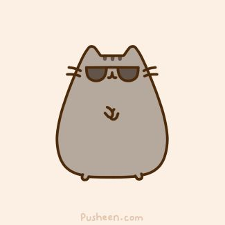
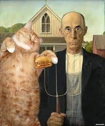

 
Cats
Cats are very cute. There are lots of types of cats.Most are cute.Most of them.The only ugly looking ones are sphinxes,and they have a lively personality.Dog lovers,Beware! Cats=Life and Love!!:D
Information on cats
The fat cat
The adventerous cat
The sleepy cat